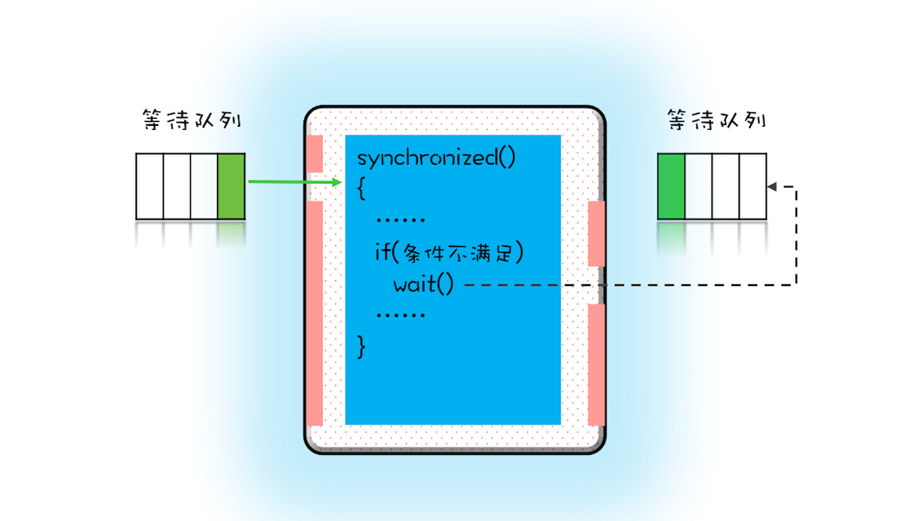
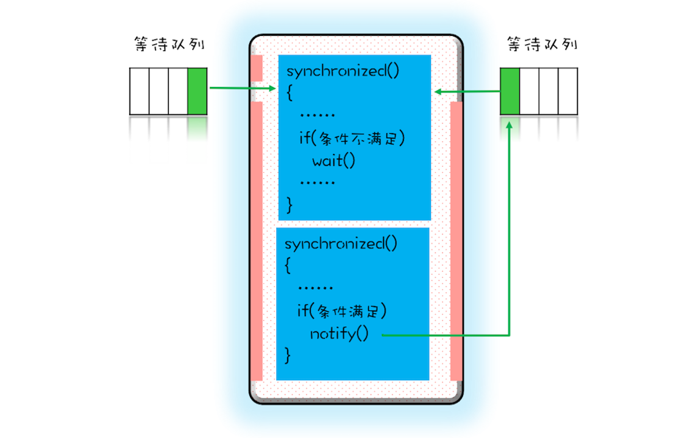

- 00 学习攻略 如何才能学好并发编程？.md
- 00 开篇词 你为什么需要学习并发编程？.md
- 01 可见性、原子性和有序性问题：并发编程Bug的源头.md
- 02 Java内存模型：看Java如何解决可见性和有序性问题.md
- 03 互斥锁（上）：解决原子性问题.md
- 04 互斥锁（下）：如何用一把锁保护多个资源？.md
- 05 一不小心就死锁了，怎么办？.md
- 06 用“等待-通知”机制优化循环等待.md
- 07 安全性、活跃性以及性能问题.md
- 08 管程：并发编程的万能钥匙.md
- 09 Java线程（上）：Java线程的生命周期.md
- 10 Java线程（中）：创建多少线程才是合适的？.md
- 11 Java线程（下）：为什么局部变量是线程安全的？.md
- 12 如何用面向对象思想写好并发程序？.md
- 13 理论基础模块热点问题答疑.md
- 14 Lock和Condition（上）：隐藏在并发包中的管程.md
- 15 Lock和Condition（下）：Dubbo如何用管程实现异步转同步？.md
- 16 Semaphore：如何快速实现一个限流器？.md
- 17 ReadWriteLock：如何快速实现一个完备的缓存？.md
- 18 StampedLock：有没有比读写锁更快的锁？.md
- 19 CountDownLatch和CyclicBarrier：如何让多线程步调一致？.md
- 20 并发容器：都有哪些“坑”需要我们填？.md
- 21 原子类：无锁工具类的典范.md
- 22 Executor与线程池：如何创建正确的线程池？.md
- 23 Future：如何用多线程实现最优的“烧水泡茶”程序？.md
- 24 CompletableFuture：异步编程没那么难.md
- 25 CompletionService：如何批量执行异步任务？.md
- 26 Fork_Join：单机版的MapReduce.md
- 27 并发工具类模块热点问题答疑.md
- 28 Immutability模式：如何利用不变性解决并发问题？.md
- 29 Copy-on-Write模式：不是延时策略的COW.md
- 3 个用户来信 打开一个新的并发世界.md
- 30 线程本地存储模式：没有共享，就没有伤害.md
- 31 Guarded Suspension模式：等待唤醒机制的规范实现.md
- 32 Balking模式：再谈线程安全的单例模式.md
- 33 Thread-Per-Message模式：最简单实用的分工方法.md
- 34 Worker Thread模式：如何避免重复创建线程？.md
- 35 两阶段终止模式：如何优雅地终止线程？.md
- 36 生产者-消费者模式：用流水线思想提高效率.md
- 37 设计模式模块热点问题答疑.md
- 38 案例分析（一）：高性能限流器Guava RateLimiter.md
- 39 案例分析（二）：高性能网络应用框架Netty.md
- 40 案例分析（三）：高性能队列Disruptor.md
- 41 案例分析（四）：高性能数据库连接池HiKariCP.md
- 42 Actor模型：面向对象原生的并发模型.md
- 43 软件事务内存：借鉴数据库的并发经验.md
- 44 协程：更轻量级的线程.md
- 45 CSP模型：Golang的主力队员.md
- 用户来信 真好，面试考到这些并发编程，我都答对了！.md
- 结束语 十年之后，初心依旧.md
06 用“等待-通知”机制优化循环等待
由上一篇文章你应该已经知道，在破坏占用且等待条件的时候，如果转出账本和转入账本不满足同时在文件架上这个条件，就用死循环的方式来循环等待，核心代码如下：
// 一次性申请转出账户和转入账户，直到成功
while(!actr.apply(this, target))
；
如果apply()操作耗时非常短，而且并发冲突量也不大时，这个方案还挺不错的，因为这种场景下，循环上几次或者几十次就能一次性获取转出账户和转入账户了。但是如果apply()操作耗时长，或者并发冲突量大的时候，循环等待这种方案就不适用了，因为在这种场景下，可能要循环上万次才能获取到锁，太消耗CPU了。
其实在这种场景下，最好的方案应该是：如果线程要求的条件（转出账本和转入账本同在文件架上）不满足，则线程阻塞自己，进入等待状态；当线程要求的条件（转出账本和转入账本同在文件架上）满足后，通知等待的线程重新执行。其中，使用线程阻塞的方式就能避免循环等待消耗CPU的问题。
那Java语言是否支持这种等待-通知机制呢？答案是：一定支持（毕竟占据排行榜第一那么久）。下面我们就来看看Java语言是如何支持等待-通知机制的。
完美的就医流程
在介绍Java语言如何支持等待-通知机制之前，我们先看一个现实世界里面的就医流程，因为它有着完善的等待-通知机制，所以对比就医流程，我们就能更好地理解和应用并发编程中的等待-通知机制。
就医流程基本上是这样：
- 患者先去挂号，然后到就诊门口分诊，等待叫号；
- 当叫到自己的号时，患者就可以找大夫就诊了；
- 就诊过程中，大夫可能会让患者去做检查，同时叫下一位患者；
- 当患者做完检查后，拿检测报告重新分诊，等待叫号；
- 当大夫再次叫到自己的号时，患者再去找大夫就诊。
或许你已经发现了，这个有着完美等待-通知机制的就医流程，不仅能够保证同一时刻大夫只为一个患者服务，而且还能够保证大夫和患者的效率。与此同时你可能也会有疑问，“这个就医流程很复杂呀，我们前面描述的等待-通知机制相较而言是不是太简单了？”那这个复杂度是否是必须的呢？这个是必须的，我们不能忽视等待-通知机制中的一些细节。
下面我们来对比看一下前面都忽视了哪些细节。
- 患者到就诊门口分诊，类似于线程要去获取互斥锁；当患者被叫到时，类似线程已经获取到锁了。
- 大夫让患者去做检查（缺乏检测报告不能诊断病因），类似于线程要求的条件没有满足。
- 患者去做检查，类似于线程进入等待状态；然后大夫叫下一个患者，这个步骤我们在前面的等待-通知机制中忽视了，这个步骤对应到程序里，本质是线程释放持有的互斥锁。
- 患者做完检查，类似于线程要求的条件已经满足；患者拿检测报告重新分诊，类似于线程需要重新获取互斥锁，这个步骤我们在前面的等待-通知机制中也忽视了。
所以加上这些至关重要的细节，综合一下，就可以得出一个完整的等待-通知机制：线程首先获取互斥锁，当线程要求的条件不满足时，释放互斥锁，进入等待状态；当要求的条件满足时，通知等待的线程，重新获取互斥锁。
用synchronized实现等待-通知机制
在Java语言里，等待-通知机制可以有多种实现方式，比如Java语言内置的synchronized配合wait()、notify()、notifyAll()这三个方法就能轻松实现。
如何用synchronized实现互斥锁，你应该已经很熟悉了。在下面这个图里，左边有一个等待队列，同一时刻，只允许一个线程进入synchronized保护的临界区（这个临界区可以看作大夫的诊室），当有一个线程进入临界区后，其他线程就只能进入图中左边的等待队列里等待（相当于患者分诊等待）。这个等待队列和互斥锁是一对一的关系，每个互斥锁都有自己独立的等待队列。

wait()操作工作原理图
在并发程序中，当一个线程进入临界区后，由于某些条件不满足，需要进入等待状态，Java对象的wait()方法就能够满足这种需求。如上图所示，当调用wait()方法后，当前线程就会被阻塞，并且进入到右边的等待队列中，这个等待队列也是互斥锁的等待队列。 线程在进入等待队列的同时，会释放持有的互斥锁，线程释放锁后，其他线程就有机会获得锁，并进入临界区了。
那线程要求的条件满足时，该怎么通知这个等待的线程呢？很简单，就是Java对象的notify()和notifyAll()方法。我在下面这个图里为你大致描述了这个过程，当条件满足时调用notify()，会通知等待队列（互斥锁的等待队列）中的线程，告诉它条件曾经满足过。

notify()操作工作原理图
为什么说是曾经满足过呢？因为notify()只能保证在通知时间点，条件是满足的。而被通知线程的执行时间点和通知的时间点基本上不会重合，所以当线程执行的时候，很可能条件已经不满足了（保不齐有其他线程插队）。这一点你需要格外注意。
除此之外，还有一个需要注意的点，被通知的线程要想重新执行，仍然需要获取到互斥锁（因为曾经获取的锁在调用wait()时已经释放了）。
上面我们一直强调wait()、notify()、notifyAll()方法操作的等待队列是互斥锁的等待队列，所以如果synchronized锁定的是this，那么对应的一定是this.wait()、this.notify()、this.notifyAll()；如果synchronized锁定的是target，那么对应的一定是target.wait()、target.notify()、target.notifyAll() 。而且wait()、notify()、notifyAll()这三个方法能够被调用的前提是已经获取了相应的互斥锁，所以我们会发现wait()、notify()、notifyAll()都是在synchronized{}内部被调用的。如果在synchronized{}外部调用，或者锁定的this，而用target.wait()调用的话，JVM会抛出一个运行时异常：java.lang.IllegalMonitorStateException。
小试牛刀：一个更好地资源分配器
等待-通知机制的基本原理搞清楚后，我们就来看看它如何解决一次性申请转出账户和转入账户的问题吧。在这个等待-通知机制中，我们需要考虑以下四个要素。
- 互斥锁：上一篇文章我们提到Allocator需要是单例的，所以我们可以用this作为互斥锁。
- 线程要求的条件：转出账户和转入账户都没有被分配过。
- 何时等待：线程要求的条件不满足就等待。
- 何时通知：当有线程释放账户时就通知。
将上面几个问题考虑清楚，可以快速完成下面的代码。需要注意的是我们使用了：
while(条件不满足) {
wait();
}
利用这种范式可以解决上面提到的条件曾经满足过这个问题。因为当wait()返回时，有可能条件已经发生变化了，曾经条件满足，但是现在已经不满足了，所以要重新检验条件是否满足。范式，意味着是经典做法，所以没有特殊理由不要尝试换个写法。后面在介绍“管程”的时候，我会详细介绍这个经典做法的前世今生。
class Allocator {
private List<Object> als;
// 一次性申请所有资源
synchronized void apply(
Object from, Object to){
// 经典写法
while(als.contains(from) ||
als.contains(to)){
try{
wait();
}catch(Exception e){
}
}
als.add(from);
als.add(to);
}
// 归还资源
synchronized void free(
Object from, Object to){
als.remove(from);
als.remove(to);
notifyAll();
}
}
尽量使用notifyAll()
在上面的代码中，我用的是notifyAll()来实现通知机制，为什么不使用notify()呢？这二者是有区别的，notify()是会随机地通知等待队列中的一个线程，而notifyAll()会通知等待队列中的所有线程。从感觉上来讲，应该是notify()更好一些，因为即便通知所有线程，也只有一个线程能够进入临界区。但那所谓的感觉往往都蕴藏着风险，实际上使用notify()也很有风险，它的风险在于可能导致某些线程永远不会被通知到。
假设我们有资源A、B、C、D，线程1申请到了AB，线程2申请到了CD，此时线程3申请AB，会进入等待队列（AB分配给线程1，线程3要求的条件不满足），线程4申请CD也会进入等待队列。我们再假设之后线程1归还了资源AB，如果使用notify()来通知等待队列中的线程，有可能被通知的是线程4，但线程4申请的是CD，所以此时线程4还是会继续等待，而真正该唤醒的线程3就再也没有机会被唤醒了。
所以除非经过深思熟虑，否则尽量使用notifyAll()。
总结
等待-通知机制是一种非常普遍的线程间协作的方式。工作中经常看到有同学使用轮询的方式来等待某个状态，其实很多情况下都可以用今天我们介绍的等待-通知机制来优化。Java语言内置的synchronized配合wait()、notify()、notifyAll()这三个方法可以快速实现这种机制，但是它们的使用看上去还是有点复杂，所以你需要认真理解等待队列和wait()、notify()、notifyAll()的关系。最好用现实世界做个类比，这样有助于你的理解。
Java语言的这种实现，背后的理论模型其实是管程，这个很重要，不过你不用担心，后面会有专门的一章来介绍管程。现在你只需要能够熟练使用就可以了。
课后思考
很多面试都会问到，wait()方法和sleep()方法都能让当前线程挂起一段时间，那它们的区别是什么？现在你也试着回答一下吧。
欢迎在留言区与我分享你的想法，也欢迎你在留言区记录你的思考过程。感谢阅读，如果你觉得这篇文章对你有帮助的话，也欢迎把它分享给更多的朋友。
© 2019 - 2023 Liangliang Lee. Powered by gin and hexo-theme-book.